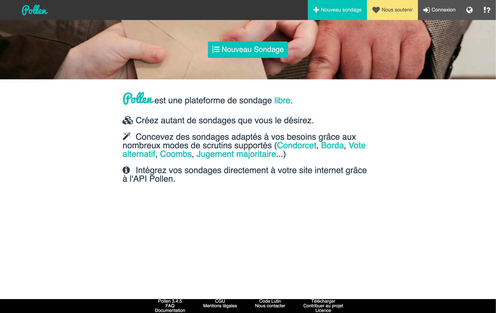
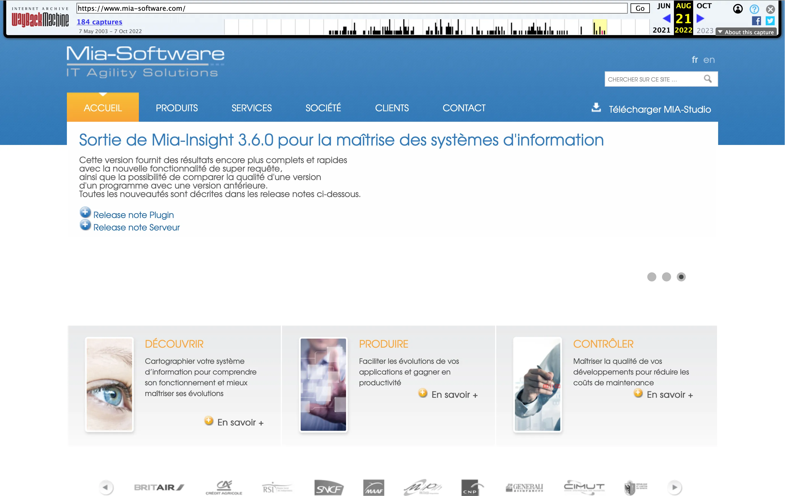
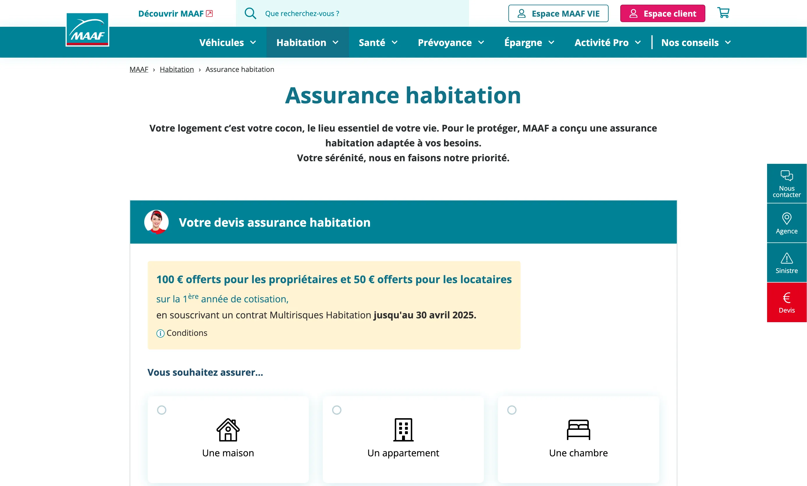
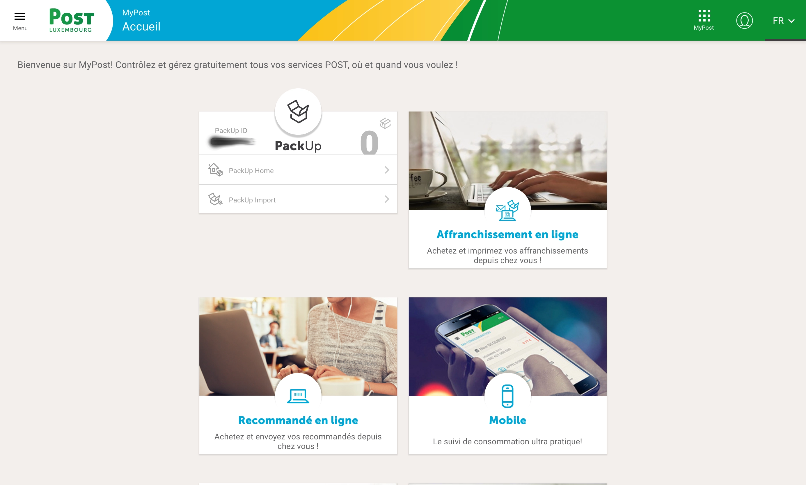
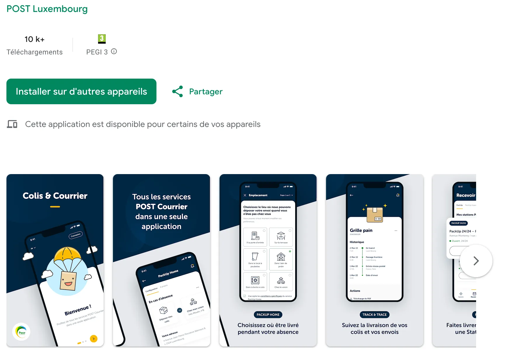

2006 (environ 5 mois)
Projet de fin d'étude
-
Simulateur 3D temps réel de cheveux (OpenGL,
SDL, C++)
- (Aucune archive trouvable)
2006 (10 semaines)
Stage
-
Évolution de l'application de visite
virtuelle de l'université (VRML)
- Introduction aux outils 3D (3ds Max)
- (Aucune archive trouvable)

2008 (environ 5 mois)
Projet de fin de maitrise
-
Première version de la plateforme Pollen,
pour créer des sondages en ligne (Java,
Apache Tapestry)
2009 (6 mois)
Stage
-
Création d’une couche de communication entre
un backend en Smalltalk et un frontend en
Java (Eclipse RCP)
- (Aucune archive trouvable)

Septembre 2009 à janvier 2022
Ingénieur Concepteur
-
Maintenance et évolution des logiciels
Mia-Mining, Mia-Discovery, Mia-Generation,
Mia-Transformation et Task-Manager (Java,
Eclipse RCP et bien d'autres)
-
Suivi d'une personne en alternance pendant 2
ans
- (Aucune archive trouvable)
Février 2012 à février 2013
Ingénieur d’études et développement -
Projet PUMA
-
Co-conception d’architectures de logiciels
ayant pour but de remplacer le patri- moine
Pacbase (Java, Eclipse RCP)
Avril à mai 2013
Ingénieur full-stack
-
Développement des parties front-end et
back-end d’une application de gestion de
flotte de véhicules (GWT)

Mai à août 2013
Ingénieur front-stack
-
Développement de la partie front-end des
simulateurs d’assurance automobile et
habitation (HTML, JavaScript et CSS)
Juillet à septembre 2018
Expert technique
-
Développement d’une nouvelle fonctionnalité
ayant pour but de consolider toutes les
bases de données en une seule par copie
incrémentale (Smalltalk).
Février à septembre 2022
Ingénieur d’études - Équipe Adhésion
-
Maintenance et développement de
fonctionnalités mineures d’un produit de
sélection de risque médical (Java)
-
Suivi quotidien d’un stagiare pendant 2 mois
Octobre 2022 à avril 2023
Ingénieur d’études back-end - Équipe
Expert
-
Développement de la nouvelle version de
l’application Expert : gestion de permis de
construire pour les collectivités
(TypeScript, Node.js)
Juin à juillet 2023
Ingénieur front-end
-
POC d’un projet d’éditeur de carte maritime
(Vue 3, TypeScript)
Juillet à novembre 2023
Ingénieur test
-
Responsable des tests de performance pour
les projets B2C de la FFT (OctoPerf)


Depuis janvier 2024
Ingénieur full-stack - Équipe Courrier
-
Maintenance et création d’applications et
fonctionnalités pour les clients de Post sur
le web et l’application mobile